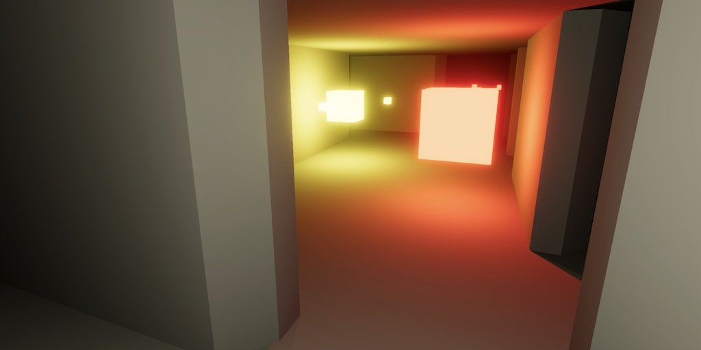
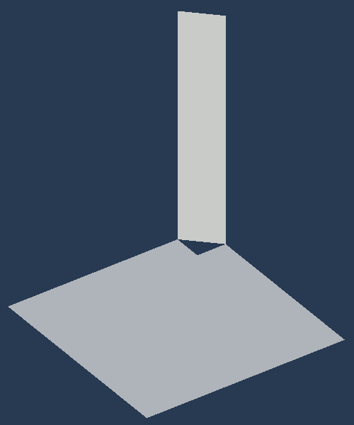
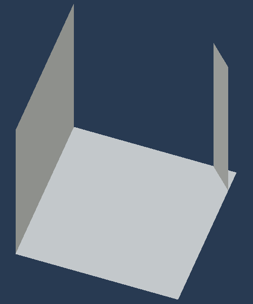
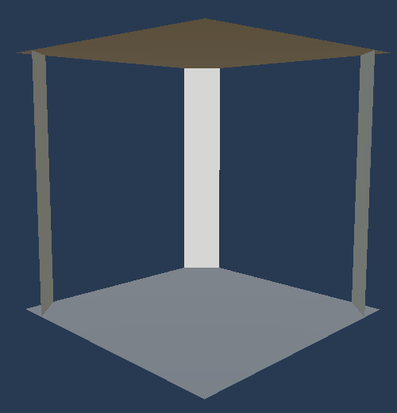
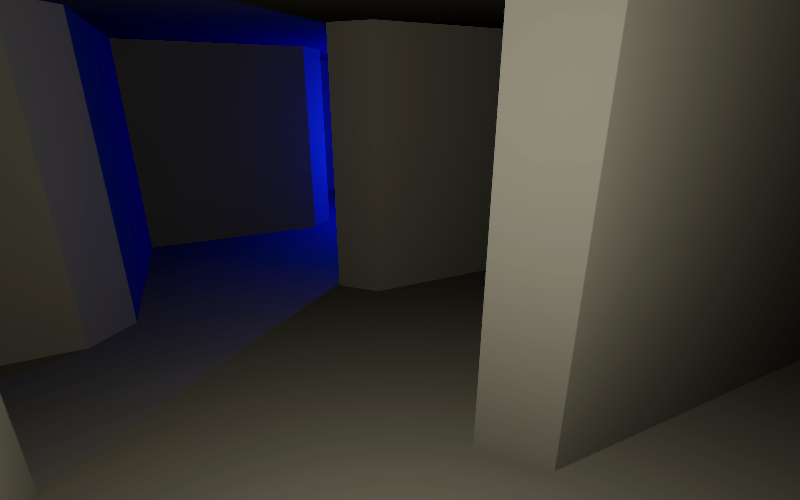
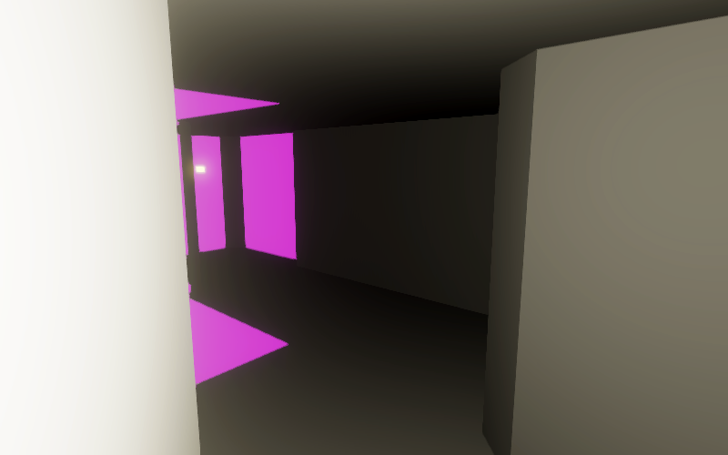
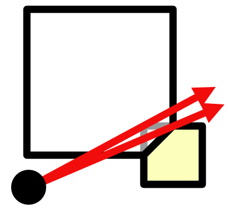
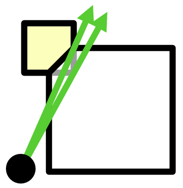
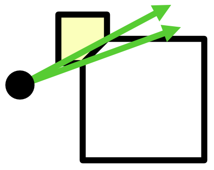
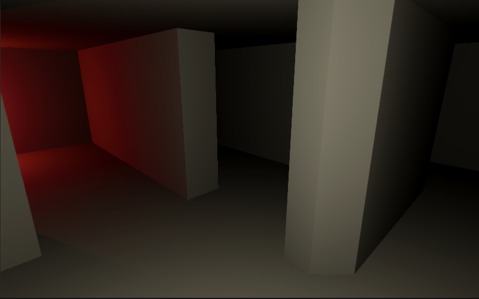

Maze 2.2.0
Cutting Corners
- Create prefab variants with beveled corners.
- Adapt occlusion culling to work with the variants.
- Use both full and cut corners in the same maze.

This tutorial is made with Unity 2022.3.10f1 and follows Maze 2.1.0.
Beveled Corners
Our maze looks very blocky. We can soften it a bit by cutting off the sharp wall corners, replacing them with a diagonal bevel.
Prefabs
Begin by renaming Corner Closed to Corner Closed Full, then create a duplicate and name it Corner Closed Cut. Remove one of its two wall quads and move the other to (0.875, 1, 0.875) with an Y rotation of 45°. The walls are inset by a quarter so increase its X scale to a quarter of √2. You can put sqrt(2)/4 in the scale field and it will be replaced with 0.3535534.

This gives us a beveled wall but with a hole in the floor and ceiling. Increasing large wall and ceiling quad's X scales to 1.75 and shift their X positions to 0.125, then delete small floor and ceiling quads. The floor and ceiling will now extend a bit beyond the wall, but that's fine.

Make variants in a similar way for T Junction Closed, T Junction Open NE, T Junction Open SE, X Junction Closed NE, X Junction Open NE, X Junction Open NE SE, and X Junction Open NE SW.

Rename the Maze Visualization scriptable object to Full Corners, then create a duplicate and name it Cut Corners. Replace all its references to full prefabs with cut variants. Then make Game use the visualization with cut corners.

Fixing Occlusion Culling
Because our occlusion system assumes full corners, visual glitches can now occur wherever we look though a corner that is cut. This can be made very clear by temporarily setting the camera's background color to magenta or another obvious color.

The errors happen because OcclusionJob is culling too greedily, based on blocking wall geometry that does not exist. Let's first consider a blocked southeast corner, viewed from a cell to the south of it. A full corner would block more of our view than a cut corner. If the corner is cut we should only inset south and not also east.

Adjust CellData.UpdateForNextCell so it updates the right slope correctly for cut corners. To also keep supporting full corners make this a choice depending on a new cutCorners variable, which we always set to true for now.
public void UpdateForNextCell(MazeFlags cell, Quadrant quadrant, float range)
{
bool cutCorners = true;
if (cell.Has(quadrant.south) &&
cell.HasNot(quadrant.southeast) &&
SouthInset > 0f)
{
RightSlope =
min(RightSlope, (cutCorners ? east : EastInset) / SouthInset);
}
…
}
We have to make the same adjustment for the left slope, but with a different orientation.

if (cell.Has(quadrant.north) && IsInRange(max(0f, west), north, range))
{
if (cell.HasNot(quadrant.northwest) && WestInset > 0f)
{
LeftSlope =
max(LeftSlope, WestInset / (cutCorners ? north : NorthInset));
}
…
}
Although this fixes occlusion culling we're now to pessimistic for the left slope. If the view origin is to the north of the diagonal line defined by the cut corner, then vision is more constrained by the other side of the corner.

LeftSlope = max(LeftSlope, cutCorners ? NorthInset < west ? west / NorthInset : WestInset / north : WestInset / NorthInset);
A similar issues doesn't exist for the right slope due to how we propagate it for new scans.
Mixed Corner Types
Our maze can work with both cut and full corners. Let's make it possible to use them at the same time.
Corner Flags
When the corner shape is variable we have to store which version we use in MazeFlags. We're using the same type for all corners of a cell, but we could decide to make this independent per corner in the future. To be forward-compatible with this let's reserve four bits to indicate whether corners are cut. Let's put them in between the passage and visibility bits.
PassagesDiagonal = 0b1111_0000, CutCorners = 0b1111_0000_0000, VisibleToPlayer = 0b0001_0000_0000_0000, VisbleToAgentA = 0b0010_0000_0000_0000, VisbleToAgentB = 0b0100_0000_0000_0000, VisbleToAgentC = 0b1000_0000_0000_0000, VisibleToAllAgents = 0b1110_0000_0000_0000, VisibleToAll = 0b1111_0000_0000_0000
Now instead of always assuming cut corners are used, make CellData.UpdateForNextCell check whether a cut-corner flag is set.
bool cutCorners = cell.HasAny(MazeFlags.CutCorners);
Randomly Cutting Corners
To randomly cut corners add a configuration field for a cut-corner-probability to GenerateMazeJob and use it to set all cut-corner flags of arbitrary cells. Do this in a separate method named CutCorners—like OpenArbitraryPasssages—invoked at the end of Execute so this new usage of the random state doesn't affect what maze gets generated by a given seed.
public float
pickLastProbability,
openDeadEndProbability,
openArbitraryProbability,
cutCornerProbability;
public void Execute()
{
…
if (cutCornerProbability > 0f)
{
random = CutCorners(random);
}
}
…
Random CutCorners(Random random)
{
for (int i = 0; i < maze.Length; i++)
{
if (random.NextBool())
{
maze.Set(i, MazeFlags.CutCorners);
}
}
return random;
}
Using Two Visualizations
We now have to pick the correct visualization per cell instead of using one for the entire maze. This means that we can no longer loop through all cells in MazeVisualization. Replace its current Visualize method with one that creates and returns a single maze cell object instance, given a maze and a cell index.
//public void Visualize(Maze maze, MazeCellObject[] cellObjects) { … }public MazeCellObject Visualize(Maze maze, int cellIndex) { (MazeCellObject, int) prefabWithRotation = GetPrefab(maze[cellIndex]); MazeCellObject instance = prefabWithRotation.Item1.GetInstance(); instance.transform.SetPositionAndRotation( maze.IndexToWorldPosition(cellIndex), rotations[prefabWithRotation.Item2]); return instance; }
Then replace the single visualization configuration field of Game with two, for cut and for full corners. Also add a cut-corner probability set to 0.5 by default and pass it to GenerateMazeJob. Game now also has to loop through all cells to visualize itself, invoking Visualize on the correct visualization per cell.
MazeVisualization visualizationCutCorners, visualizationFullCorners;
…
[SerializeField, Range(0f, 1f)]
float
pickLastProbability = 0.5f,
openDeadEndProbability = 0.5f,
openArbitraryProbability = 0.5f,
cutCornerProbability = 0.5f;
…
void StartNewGame()
{
…
new FindDiagonalPassagesJob
{
maze = maze
}.ScheduleParallel(
maze.Length, maze.SizeEW, new GenerateMazeJob
{
…
openArbitraryProbability = openArbitraryProbability,
cutCornerProbability = cutCornerProbability
}.Schedule()).Complete();
…
//visualization.Visualize(maze, cellObjects);
for (int i = 0; i < maze.Length; i++)
{
cellObjects[i] = (maze[i].Has(MazeFlags.CutCorners) ?
visualizationCutCorners : visualizationFullCorners).Visualize(maze, i);
}
…
}

The next tutorial is Maze 3.0.0.